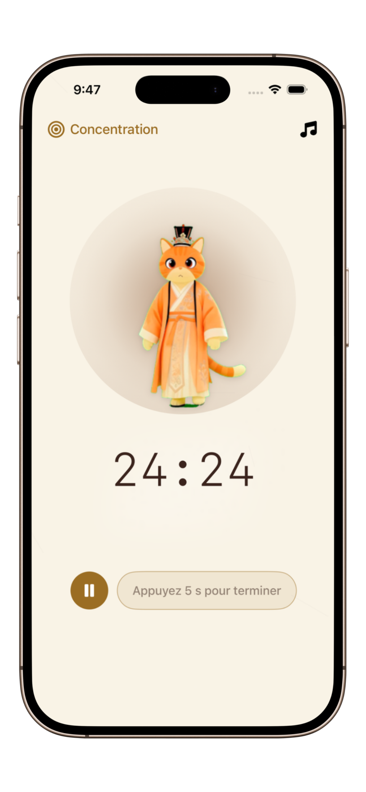

Les 5 Meilleures Applications Pomodoro pour le Travail Profond (2026)
Maîtrisez votre temps, entrez en état de flow et éliminez les distractions numériques avec les bons outils de productivité.
La technique Pomodoro est plus qu'un simple minuteur ; c'est un hack cognitif pour votre cerveau. En divisant les tâches en sprints de 25 minutes suivis d'une pause de 5 minutes, vous maintenez une énergie mentale élevée toute la journée. Mais en 2026, un simple minuteur de cuisine ne suffit plus face à l'océan de notifications.
Pourquoi le choix de votre minuteur est crucial
Une bonne application Pomodoro doit réduire les frictions, pas en ajouter. Pour les utilisateurs souffrant de TDAH ou ceux dans des environnements d'étude intenses, une mauvaise application peut devenir une distraction en soi avec des analyses complexes et une interface encombrée.

Visualiser la concentration : L'interface sereine de PurrrrrFocus.
Top 5 des Minuteurs Pomodoro Testés
1. PurrrrrFocus (Idéal pour les Minimalistes & TDAH)
PurrrrrFocus se distingue en mélangeant une esthétique orientale à l'encre avec un compagnon félin apaisant. Il est conçu spécifiquement pour ceux qui souffrent d'anxiété liée à la productivité.
- Avantages : Zéro distraction, visuels apaisants, et un mode "Focus Profond" qui protège votre flow.
- Idéal pour : Le travail de fond, l'écriture créative et les étudiants ayant besoin d'un environnement calme.
Prêt à entrer dans votre état de flow ?
Découvrez le minuteur Pomodoro le plus paisible au monde. Pas de publicité, pas d'encombrement, juste vous et votre chat de focus.
Télécharger PurrrrrFocus Gratuitement2. Forest (Idéal pour la Gamification)
Un choix classique où vous faites pousser des arbres virtuels. Idéal pour les apprenants visuels, bien que la version mobile puisse parfois vous tenter de vérifier l'application trop souvent.
3. Focus-To-Do (Idéal pour la Gestion de Tâches)
Si vous avez besoin que votre minuteur Pomodoro soit synchronisé avec une liste de tâches complète, c'est une option robuste (bien que plus chargée).
Comparaison Rapide : Lequel choisir ?
| Caractéristique | PurrrrrFocus | Forest | Focus-To-Do |
|---|---|---|---|
| Ambiance | Calme/Zen | Gamifiée | Utilitaire/Tâches |
| Adapté au TDAH | Oui (Élevé) | Modéré | Faible |
| Esthétique | Peinture à l'encre | Dessin/Mignon | Interface standard |
Comment créer une habitude de Flow de 2 heures
Le secret ne réside pas seulement dans l'application, mais dans l'environnement. Lancez votre session, posez votre téléphone face contre table, et laissez le compagnon félin de PurrrrrFocus signaler à votre cerveau qu'il est temps de travailler. Combinez cela avec le timeboxing pour une efficacité maximale.